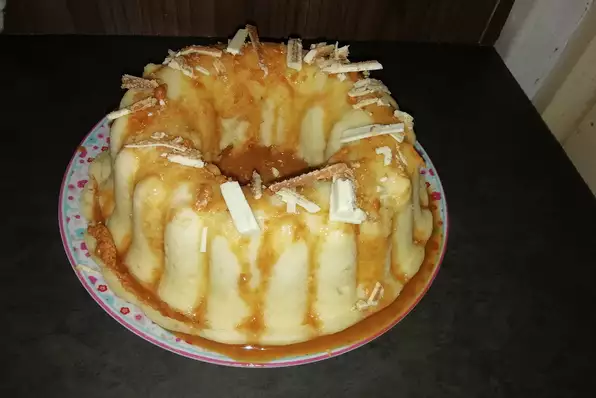

Microwave Cake

Description
Easy fast cake that can be made in the microwave in approximately 12 minutes. My favorite combinations are: chocolate cake mix with cherry pie filling or yellow cake mix with apple pie filling ( I add a bit of cinnamon for flavor to this one.)
Ingredients
- 1 (18.25 ounce) package yellow cake mix
- 3 Eggs
- 1 (21 ounce) can apple pie filling
- ½ cup applesauce
Directions
- Mix the box of cake mix, eggs, pie filling and applesauce till moist. Use a microwave safe bundt pan or substitute a microwave safe bowl that has a microwave safe cup or cone placed in the middle of it (to mimic a bundt pan). Pour mixture into the bowl around the cup.
- Bake on high for 6 minutes 30 seconds, turn and bake for another 6 minutes 30 seconds on high. Remove from oven and cover bowl with a dish and let stand for 5 minutes (this finishes the cooking process).
- Turn cake over onto dish and remove cone (cup) for a delicious quick dessert. Good hot with vanilla ice cream or whipped topping.